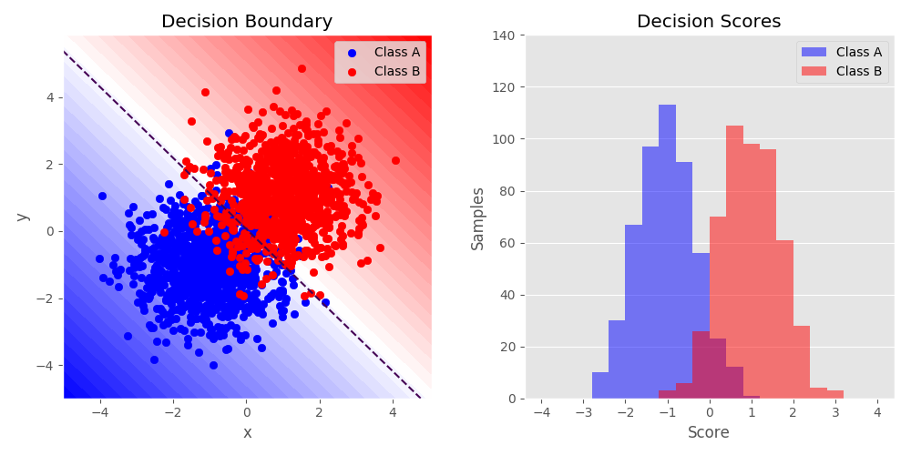

Binary Classification with NumPy and TMVA¶
{kind=link}
Python source code: plot_twoclass.py
from array import array
import numpy as np
from numpy.random import RandomState
import matplotlib.pyplot as plt
from root_numpy.tmva import add_classification_events, evaluate_reader
from root_numpy import ROOT_VERSION
from ROOT import TMVA, TFile, TCut
plt.style.use('ggplot')
RNG = RandomState(42)
# Construct an example dataset for binary classification
n_vars = 2
n_events = 1000
signal = RNG.multivariate_normal(
np.ones(n_vars), np.diag(np.ones(n_vars)), n_events)
background = RNG.multivariate_normal(
np.ones(n_vars) * -1, np.diag(np.ones(n_vars)), n_events)
X = np.concatenate([signal, background])
y = np.ones(X.shape[0])
w = RNG.randint(1, 10, n_events * 2)
y[signal.shape[0]:] *= -1
permute = RNG.permutation(y.shape[0])
X = X[permute]
y = y[permute]
# Split into training and test datasets
X_train, y_train, w_train = X[:n_events], y[:n_events], w[:n_events]
X_test, y_test, w_test = X[n_events:], y[n_events:], w[n_events:]
output = TFile('tmva_output.root', 'recreate')
factory = TMVA.Factory('classifier', output,
'AnalysisType=Classification:'
'!V:Silent:!DrawProgressBar')
if ROOT_VERSION >= '6.07/04':
data = TMVA.DataLoader('.')
else:
data = factory
for n in range(n_vars):
data.AddVariable('f{0}'.format(n), 'F')
# Call root_numpy's utility functions to add events from the arrays
add_classification_events(data, X_train, y_train, weights=w_train)
add_classification_events(data, X_test, y_test, weights=w_test, test=True)
# The following line is necessary if events have been added individually:
data.PrepareTrainingAndTestTree(TCut('1'), 'NormMode=EqualNumEvents')
# Train a classifier
if ROOT_VERSION >= '6.07/04':
BookMethod = factory.BookMethod
else:
BookMethod = TMVA.Factory.BookMethod
BookMethod(data, 'Fisher', 'Fisher',
'Fisher:VarTransform=None:CreateMVAPdfs:'
'PDFInterpolMVAPdf=Spline2:NbinsMVAPdf=50:'
'NsmoothMVAPdf=10')
factory.TrainAllMethods()
# Classify the test dataset with the classifier
reader = TMVA.Reader()
for n in range(n_vars):
reader.AddVariable('f{0}'.format(n), array('f', [0.]))
reader.BookMVA('Fisher', 'weights/classifier_Fisher.weights.xml')
twoclass_output = evaluate_reader(reader, 'Fisher', X_test)
plot_colors = "br"
plot_step = 0.02
class_names = "AB"
cmap = plt.get_cmap('bwr')
fig = plt.figure(figsize=(10, 5))
fig.patch.set_alpha(0)
# Plot the decision boundaries
plt.subplot(121)
x_min, x_max = X[:, 0].min() - 1, X[:, 0].max() + 1
y_min, y_max = X[:, 1].min() - 1, X[:, 1].max() + 1
xx, yy = np.meshgrid(np.arange(x_min, x_max, plot_step),
np.arange(y_min, y_max, plot_step))
Z = evaluate_reader(reader, 'Fisher', np.c_[xx.ravel(), yy.ravel()])
Z = Z.reshape(xx.shape)
plt.contourf(xx, yy, Z, cmap=cmap, vmin=Z.min(), vmax=Z.max(),
levels=np.linspace(Z.min(), Z.max(), 50))
plt.contour(xx, yy, Z, levels=[0], linestyles='dashed')
plt.axis("tight")
# Plot the training points
for i, n, c in zip([-1, 1], class_names, plot_colors):
idx = np.where(y == i)
plt.scatter(X[idx, 0], X[idx, 1],
c=c, cmap=cmap,
label="Class %s" % n)
plt.xlim(x_min, x_max)
plt.ylim(y_min, y_max)
plt.legend(loc='upper right')
plt.xlabel('x')
plt.ylabel('y')
plt.title('Decision Boundary')
# Plot the two-class decision scores
ax = plt.subplot(122)
ax.xaxis.grid(False)
for i, n, c in zip([-1, 1], class_names, plot_colors):
plt.hist(twoclass_output[y_test == i],
bins=20,
range=(-4, 4),
facecolor=c,
label='Class %s' % n,
alpha=.5, histtype='stepfilled')
x1, x2, y1, y2 = plt.axis()
plt.axis((x1, x2, y1, 140))
plt.legend(loc='upper right')
plt.ylabel('Samples')
plt.xlabel('Score')
plt.title('Decision Scores')
plt.tight_layout()
plt.subplots_adjust(wspace=0.25)
plt.show()
Total running time of the example: 0.48 seconds